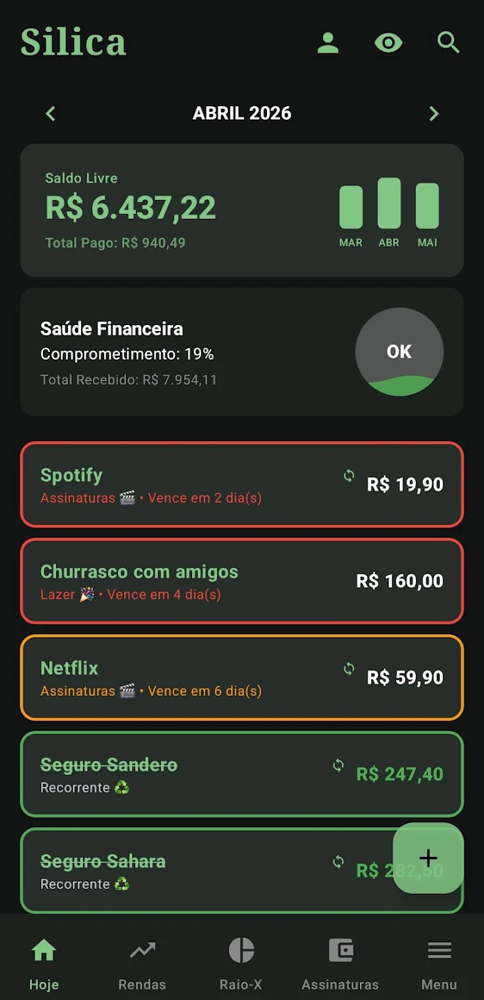
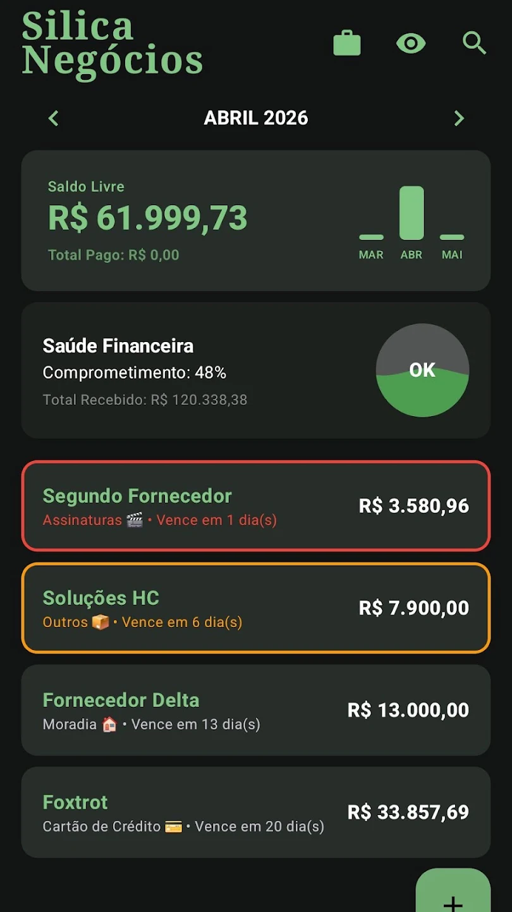

Pessoal
Personal
GrátisFreeSuas contas do dia a dia: despesas, rendas, cartões e assinaturas.
Your everyday money: expenses, income, cards and subscriptions.
O Silica reúne quatro universos isolados — Pessoal, Negócios, Vendas e Serviços — para você visualizar sua saúde financeira e o lucro do seu negócio com clareza.
The Silica app brings four isolated universes — Personal, Business, Sales and Services — so you can see your financial health and your business profit clearly.
✅ Grátis para começar · Funciona offline · Seus dados ficam no seu aparelho Free to start · Works offline · Your data stays on your device

Troque de perfil com um toque. Cada espaço tem seus próprios lançamentos, relatórios e regras.
Switch profiles with one tap. Each space has its own entries, reports and rules.
Suas contas do dia a dia: despesas, rendas, cartões e assinaturas.
Your everyday money: expenses, income, cards and subscriptions.
Isolamento total para sua empresa ou MEI, separado da vida pessoal.
Full isolation for your company, separate from your personal life.
Faturamento, lucro automático, estoque e comissões de vendedores.
Revenue, automatic profit, stock and salesperson commissions.
Catálogo, ordens de serviço, orçamentos e recibos em PDF com Pix.
Catalog, work orders, quotes and PDF receipts with Pix QR.
A tela inicial mostra seu saldo livre, o comprometimento da sua renda e um medidor que respira. As contas usam cores: verde (paga), laranja (vence em breve) e vermelho (urgente ou atrasada).
The home screen shows your free balance, how committed your income is, and a living health gauge. Bills are color-coded: green (paid), orange (due soon) and red (urgent or overdue).
O Raio-X agrupa gastos e lucros por categoria, no mês ou no ano acumulado, com médias mensais e percentuais. Toque numa categoria para ver os lançamentos que a compõem.
X-Ray groups spending and profit by category, monthly or year-to-date, with monthly averages and percentages. Tap a category to see the entries behind it.
No perfil Vendas, ele traz métricas profissionais como ROI e Conversão em Caixa, além do relatório do Gerente em PDF.
In the Sales profile it adds pro metrics like ROI and Cash Conversion, plus a Manager PDF report.
→ Ver tudo sobre o Raio-XSee everything about X-Ray
Despesas no cartão viram uma fatura única, com limite disponível e aviso de fechamento.
Card expenses become a single invoice, with available limit and closing alerts.
Contas que se repetem sozinhas todo mês e o impacto anual das suas assinaturas.
Bills that repeat every month automatically, and the yearly impact of subscriptions.
Divisão por centavos: a soma das parcelas bate sempre com o total, sem sobra.
Cent-precise split: installments always add up to the exact total.
Avisa antes de cada vencimento, com a antecedência e a frequência que você escolher.
Warns you before each due date, with the lead time and frequency you choose.
Biometria, modo privacidade e backup criptografado com a sua senha.
Biometrics, privacy mode and an encrypted backup locked with your password.
Temas premium, texturas de papel e um modo calmo quando você quita tudo do mês.
Premium themes, paper textures and a calm mode when you clear the month.
Separe as finanças da empresa em um espaço próprio. No Silica Vendas, cada venda dá baixa no estoque e o lucro vira renda automaticamente quando você marca uma parcela como paga.
Keep company finances in their own space. In Silica Sales, every sale reduces stock and profit becomes income automatically when you mark an installment as paid.
→ Ver tudo sobre VendasSee everything about Sales
Feito para prestadores (reparos, manutenção, mão de obra): monte um catálogo, registre ordens de serviço, gere orçamentos e recibos em PDF com QR Pix, colha a assinatura do cliente na tela e envie tudo pelo WhatsApp.
Built for service providers: create a catalog, register work orders, generate PDF quotes and receipts with a Pix QR code, capture the client's on-screen signature and share it all on WhatsApp.
Explorar o Silica Serviços Explore Silica ServicesO Silica funciona offline. O backup é criptografado com uma senha que só você conhece.
Silica works offline. Backups are encrypted with a password only you know.
Não precisa de conta nem de internet para usar. Tudo é salvo localmente.
No account or internet required. Everything is stored locally.
Bloqueie o app com digital, rosto ou PIN do aparelho.
Lock the app with fingerprint, face or your device PIN.
Oculta todos os valores com um toque, ideal para lugares públicos.
Hide every value with one tap — perfect for public places.
Baixe grátis na Google Play e ative o PRO quando quiser desbloquear todos os espaços e recursos.
Download for free on Google Play and go PRO whenever you want to unlock every space and feature.